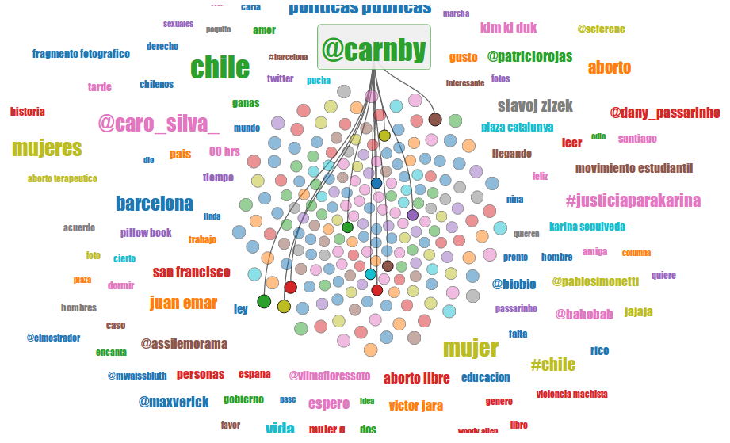

Data Portraits – visualization, social network analysis, filter bubble
This is the second key project of my doctoral thesis. It's a joint work with my co-advisor Mounia Lalmas and Daniele Quercia. Likewise the Virtual Ornithology project, it's about user behavior in Twitter. In particular, we want to find out how to connect people with opposing views in controversial and sensitive issues by using playful information visualizations like this one:

There are two behavioral bias related to this research project: homophily and selective exposure. Homophily refers to connecting and having relationships with people similar to us, while selective exposure is the act of preferring to read information that reafirms our beliefs, and discarding information that do not. Previous work has intented to solve this problem by, for instance, recommending people that is dissimilar (i.e., they have opposing views), or by displaying challenging information to user's beliefs. It hasn't worked because users do not value diversity.
Our hypothesis is that this problem can be solved if, in addition to algorithms that perform people and content recommendation, we focus on how to display those algorithm outcomes. In particular, we propose that playful information visualization techniques will allow us to avoid the cognitive dissonance of confronting challenging information. As algorithm we consider a new algorithm that will recommend people that has opposing views in sensitive issues, but that is similar in non-sensitive issues (for instance, people who thinks differently on abortion but that likes the same movies).
As a case study, we analyzed Twitter users from Chile in the context of the abortion issue (recall that there are two prominent stances: #prochoice and #prolife). First, we tested our idea that intermediary topics, those that are able to connect people with different viewpoints in abortion. It turns out that, indeed, they exist! We detected them by using topic modelling techniques. We presented these results at the 2014 International World Wide Web Conference held in Seoul.
We have evaluated our visualization in a pilot study with promising results. Results are reported in this pre-print and covered by:
- MIT Technology Review
- O'Reilly Radar
- slashdot
- Smithsonian
- WIRED.it (in italian)
- TIC Beat Interview (in spanish)
Currently we are working on a more complete and longitudinal user study, with an improved visualization design. Stay tuned!